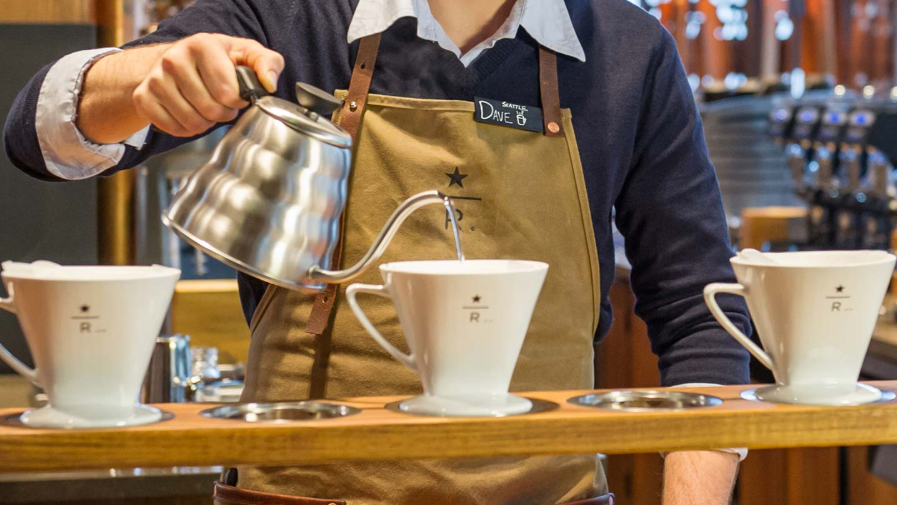
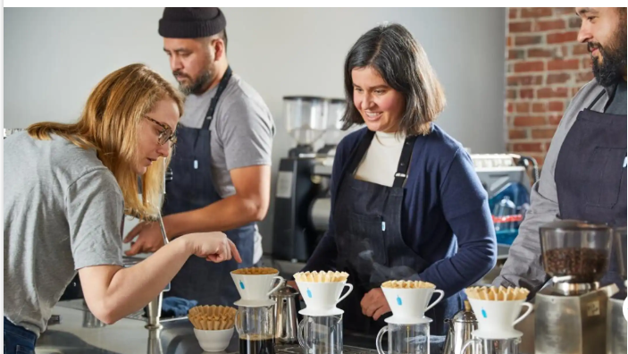

About Soul of Coffee
At Soul of coffee in NewYork city, in United States we pride ourselves on being a go-to destination for coffee lovers and conversation seekers alike. We’re dedicated to providing an exceptional coffee experience in a cozy and inviting atmosphere, where guests can relax, unwind, and enjoy their time in comfort.

Our Team
We like to say that we are not in the coffee business serving people, but in the people business serving coffee. Our employees – who we call partners – are at the heart of the Starbucks experience. We are committed to making our partners proud and investing in their health, well-being and success and to creating a culture of belonging where everyone is welcome.